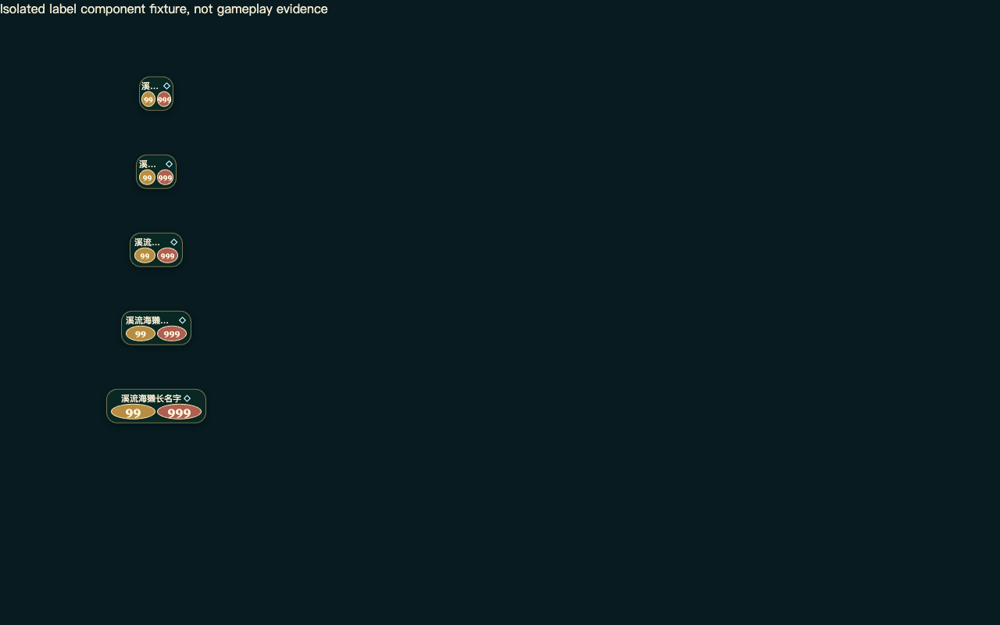

SPELLWOOD · 2026-10-10
从可玩到更细致
本机Apple M4 / Metal、安装版有头Chrome154。源图、原片与实际失败分开保留；点击图片可查看未改动原图。
完整证据与结果索引 · 本页文件SHA-256 · 原始证据归档清单
本页展示外观与动作过程。截图不证明流畅度；DPR1窗口模拟不代表手机真机；本地两个浏览器不代表公网真人联机。基线fd82、最终b059与历史c49片段按实际来源标注。
44px标签：三位数字完整可读
相同的独立组件检查。原999文字约17.5px，数字列14px；现在18px，点击区域仍44px，字号保持。
未改fd82基线：44px数字列溢出 · 点击原图
最终版本：各宽度组件均通过原textFits检查 · 点击原图 棋盘：原创边角浅雕色纹
同相机、同几何的独立WebGL材质夹具，不能当作实际对战。边角增加叶纹，保留安静的单位落点与中心。
成长与回血：从首帧分行
前图为初轮c49，后图为最终b059。原生VP8 source16，PTS分别0.542s／0.538s；自然对局牌型、伙伴和血量不同，不能当作严格像素A/B。
全屏开包：可靠保存后连续翻面
未改基线在pointerdown约32ms后，43.8ms采样时原canvas已断开，没有可用揭晓录像。c49实测保存请求41ms、确认56ms、mask0→1，原画布在182个RAF样本中持续连接。18个原生动态帧跨度0.532s，最大PTS间隔51ms；静止尾段不补算零延迟。
正常速原生录像
原始匿名canvas VP8；没有音频、插帧、变速或重新编码。四种战斗效果保持level0、pixelScale1、1024阴影，各有一次accepted命令和一次权威事件。这些片段不替代原250ms近战验收，也不代表整场FPS。
全屏开盒
c49原片 · 最大PTS间隔69ms · 原WebM
单张揭晓
c49原片 · 最大PTS间隔51ms · 原WebM
英语火花：发射与命中
b059原片 · 最大PTS间隔47ms · 原WebM
回血
b059原片 · 最大PTS间隔50ms · 原WebM
护盾
b059原片 · 最大PTS间隔56ms · 原WebM
生命上限与回血
b059原片 · 最大PTS间隔50ms · 原WebM
满场与七卡手牌 · 1280x800
真实局面、自然抽牌，不能当作严格像素A/B。窗口尺寸仿真不代表手机真机。320窄屏远侧人物与短横屏单位仍较小。
满场与七卡手牌 · 844x390
真实局面、自然抽牌，不能当作严格像素A/B。窗口尺寸仿真不代表手机真机。320窄屏远侧人物与短横屏单位仍较小。
满场与七卡手牌 · 740x360
真实局面、自然抽牌，不能当作严格像素A/B。窗口尺寸仿真不代表手机真机。320窄屏远侧人物与短横屏单位仍较小。
满场与七卡手牌 · 390x844
真实局面、自然抽牌，不能当作严格像素A/B。窗口尺寸仿真不代表手机真机。320窄屏远侧人物与短横屏单位仍较小。
满场与七卡手牌 · 320x568
真实局面、自然抽牌，不能当作严格像素A/B。窗口尺寸仿真不代表手机真机。320窄屏远侧人物与短横屏单位仍较小。